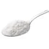
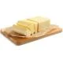
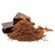

Confira essa clássica receita de bolo de cenoura simples e fácil, nossa campeã de acessos!
O bolo de cenoura é um doce muito popular em nosso país, especialmente no café da manhã e no lanche da tarde. Com sua cobertura de chocolate irresistível e seu interior macio e úmido,
ela é uma receita que conquista o coração de todos! Veja com a gente como fazer bolo de cenoura, uma receita prática, preparada com auxílio do liquidificador e perfeita para degustar com um cafezinho!
| |
1/2 xícara (chá) de óleo | |
4 ovos |
| |
2 e 1/2 xícaras (chá) de farinha de trigo | 3 cenouras médias raladas | |
| |
2 xícaras (chá) de açucar |  | 1 colher (sopa) de fermento em pó |
|  | 1 colher (sopa) de manteiga | |
1 xícara (chá) de açúcar |
|  | 3 colheres (sopa) de chocolate em pó | 1 xícara (chá) de leite |
Verifique se você tem todos os utencílios para fazer um bolo!
1 - Em um liquidificador, adicione a cenoura, os ovos e o óleo, depois misture.
2 - Acrescente o açúcar e bata novamente por 5 minutos.
3 - Em uma tigela ou na batedeira, adicione a farinha de trigo e depois misture novamente.
4 - Acrescente o fermento e misture lentamente com uma colher.
5 - Asse em um forno preaquecido a 180° C por aproximadamente 40 minutos.
6 - Despeje em uma tigela a manteiga, o chocolate em pó, o açúcar e o leite, depois misture.
7 - Leve a mistura ao fogo e continue misturando até obter uma consistência cremosa, depois despeje a calda por cima do bolo.
Contato do author dessa página
Escrito por João Gabriel